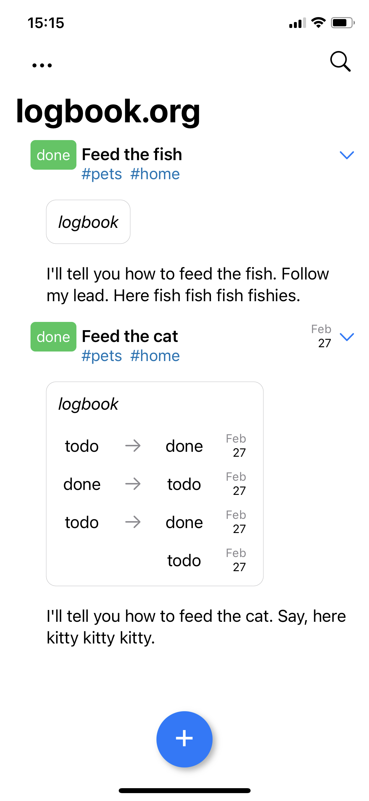
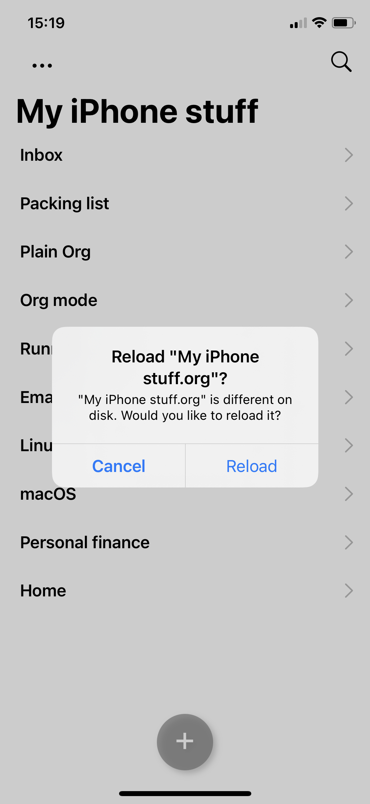

Álvaro Ramírez
Plain Org v1.2.1 released
Plain Org v1.2.1 is now available on the App Store. The update receives minor features, bug fixes, and improvements.
If you haven't heard of Plain Org, it gives you access to org files on iPhone while away from your beloved Emacs.
I love org markup, but we (iPhone + org users) are a fairly niche userbase. If you're finding Plain Org useful, please help support this effort by getting the word out. Tell your friends, tweet, or blog about it.
On to v1.2.1 release notes…
Render LOGBOOK
State transitions and LOGBOOK drawers are now recognized and rendered as such.
Either of the following snippets are rendered as togglable LOGBOOK drawers.
* TODO Feed the fish - State "DONE" from "TODO" [2022-03-11 Fri 12:23]
* TODO Feed the cat :LOGBOOK: - State "DONE" from "TODO" [2022-03-11 Fri 12:23] :END:

Add task to top/bottom
Up until now, tasks were always appended to the bottom of things. This didn't work so well if you like seeing recent items bubbling up to the top.
This version adds a new setting: Settings > Add new tasks to > Top/Bottom, giving you the choice.
Note: Top is the new default value, please change this setting if you'd like to keep the previous behaviour.

Checking for changes
Local file changes aren't always detected via state change notifications, so additional checks are now in place to offer reloading files.

Open inactive files
After adding new tasks via iOS's share sheet, if the item was added to a file other than the active one, offer to open that instead.

Other improvements
- Color keyword red/green depending on #+TODO: position.
- Round-trip planning order (SCHEDULED, CLOSED, DEADLINE).
- Improve tag alignment to match org mode behaviour (best effort, sorry).
- Improve vertical spacing prior to lists.
- Improve share sheet reliability.
- Fix opening local links from list items.
- Fix indent for list items without previous content.
- Fix race condition in adding TITLE and ID to new files.
- Fix incorrect keyword color selection in search toolbar.
- Fix menu inadvertently closing.
- Fix menu tapping for iPad.